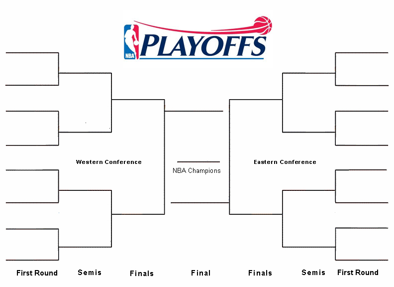

Check Out Some of My Works.


Supervised Machine Learning Algorithms for Predicting National Basketball Association (NBA) Playoff Contention
This work focused on the development and testing of several machine learning models for predicting the playoff contention of 32 teams in the National Basketball Association (NBA).
Machine Learning, Python, Sci-kit Learn, SciPy